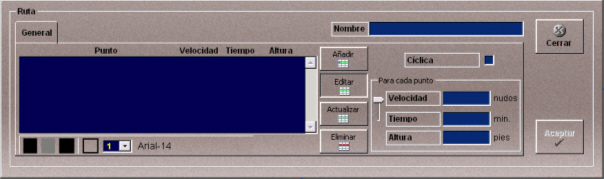
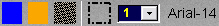

Rutas
Las rutas están formadas por una colección ordenada de puntos (waypoints) para cada uno de los cuales se define la velocidad de paso por el mismo expresada en nudos. Estas rutas podrán ser asignadas a unidades para su ejecución de forma automática.
La creación y edición de rutas se lleva a cabo mediante la siguiente ventana.

Esta ventana incluye los datos y botones que se describen a continuación:
Nombre: Nombre de la ruta.
Formato: caracteres alfanuméricos.
Cíclica: Si esta casilla está marcada, durante la ejecución del ejercicio, el buque que realice esta ruta la repetirá continuamente, si no está marcada cuando termine la ruta continuará con la velocidad y dirección del último tramo de la ruta.
Botones de manejo de la lista de puntos:
Editar: Este botón sirve para mostrar el gráfico de la ruta en la presentación cartográfica y para modificar los datos de los puntos de la ruta.
Cuando se abre la ventana para crear una nueva ruta, la lista de puntos está vacía y el botón Editar está pulsado, en estas condiciones, al picar con el botón izquierdo del ratón sobre la presentación cartográfica, se añaden puntos a la lista a la vez que se van dibujando sobre la carta.
Cuando se abre la ventana para consultar los datos de una ruta ya creada, al pulsar el botón Editar, el gráfico de la ruta aparece en la presentación cartográfica. Mientras el botón Editar esté pulsado, se pueden seleccionar los puntos picando sobre ellos con el botón izquierdo del ratón, y cambiarlos de posición arrastrando el ratón hasta la nueva posición. Asimismo, se pueden seleccionar los puntos sobre la lista para consultar o modificar sus datos. La modificación de los datos requiere confirmación mediante el botón Actualizar.
Nota: Durante la edición de objetos gráficos (zonas meteorológicas, balizas, mapas de viento y corriente, rutas…) se anulan las funciones asignadas a los botones del ratón para control de la presentación cartográfica (posicionar hook, zoom+, zoom- demora/distancia…), por tanto para ver el gráfico de la ruta hay que hacer zoom sobre la zona de la carta en la que se encuentra dicha ruta antes de pulsar el botón Editar.
Añadir: Al pulsar el botón Añadir se inserta un nuevo punto entre el punto seleccionado y el siguiente. También se pueden insertar puntos seleccionando con el ratón un segmento del gráfico de la ruta y pulsando la tecla "Insertar".
Nota: Sólo se pueden añadir puntos cuando se está mostrando el gráfico de la ruta, es decir, si el botón Editar está pulsado.
Eliminar: Al pulsar este botón se elimina de la lista el punto seleccionado. También se pueden eliminar puntos seleccionando con el ratón un punto del gráfico de la zona y pulsando la tecla "Suprimir".
Nota: Sólo se pueden eliminar puntos cuando se está mostrando el gráfico de la ruta, es decir, si el botón Editar está pulsado.
Actualizar: Al pulsar este botón se actualizan los datos del punto seleccionado en la lista, con el nuevo valor de velocidad introducido.
Botones de recursos gráficos:

Estos botones sirven para definir el color, el estilo y el tipo de letra que se aplica al gráfico de la ruta.
El funcionamiento de los botones de la barra de recursos gráficos se describe en el apartado Definición de Recursos Gráficos.
Datos de los puntos de la ruta:
El operador puede introducir Velocidad o Tiempo (no ambos). Con la barra situada a la izquierda puede seleccionar el campo a introducir.
Velocidad: Velocidad máxima con la que la unidad debe pasar por el punto.
Unidades: nudos
Rango: 0.00 - 100000.00
Tiempo: Tiempo transcurrido desde el inicio de la ruta hasta alcanzar el punto. Con este dato el sistema calcula la velocidad a la que debe ir la unidad.
Unidades: minutos
Rango: 0.00 - 100000.00
Altura: Altura o profundidad con la que la unidad debe pasar por el punto (sólo para unidades aéreas y submarinas).
Unidades: pies
Rango: -100000.00 - 100000.00
Las rutas, una vez preparadas, podrán ser añadidas a los Escenarios, los cuales a su vez pueden ser incorporados en distintos Ejercicios.
Durante la ejecución de un Ejercicio, estarán disponibles para su asignación a unidades aquellas rutas que hayan sido añadidas al Escenario del mismo.
Las rutas se muestran gráficamente en la Presentación Cartográfica del instructor, tanto durante la preparación como durante la ejecución de ejercicios que incluyan rutas.